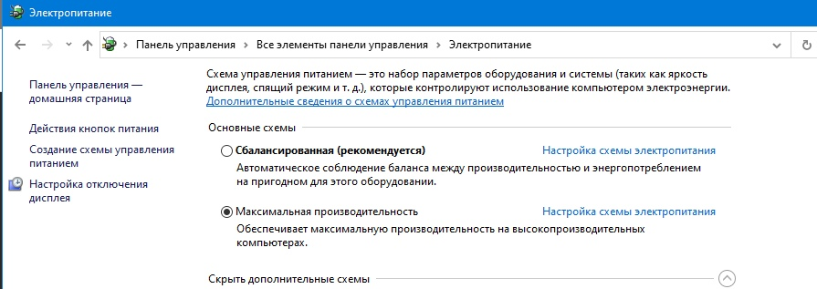
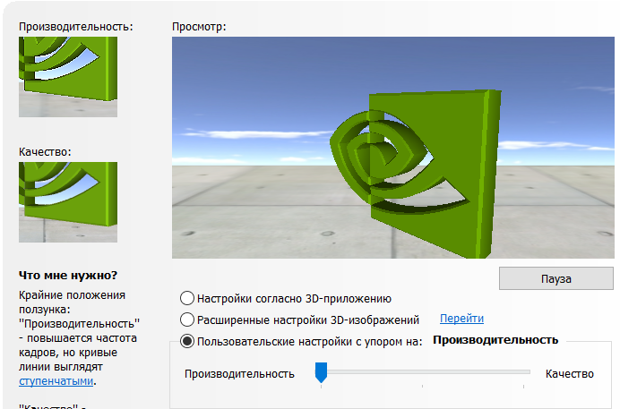
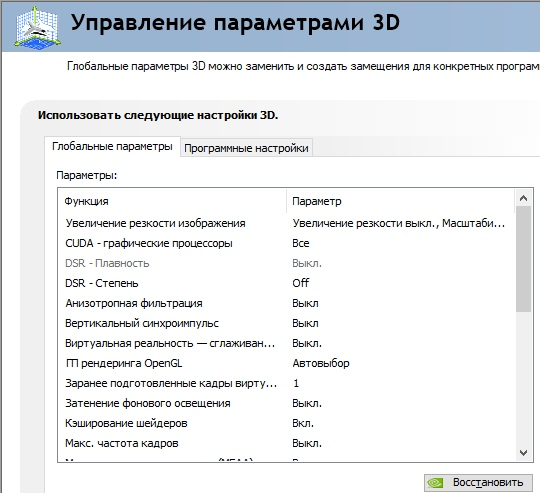
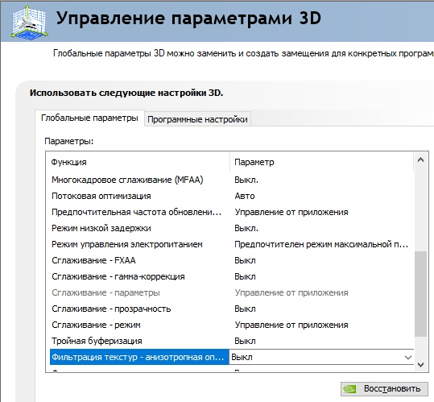

Настройка мыши
Прежде чем выполнять дальнейшую настройку пк и игры, нужно убедиться в том, что в системе стоят стандартные настройки и отключено ускорение мыши. Для этого заходим в Параметры >> Устройства >> Мышь >> Доп. параметры мыши и ставим скорость указателя на 6 единиц, а также отключаем *повышенную точность указателя*, чтобы отключить ускорение.

Настройка dpi
Для начала введём один термин - eDPI. Это значение DPI вашей мыши умноженный на значение чувствительности мыши в игре. Если у меня стоит 2.5 в игре и 400 DPI на мышке, значит мой eDPI = 1000.
eDPI = DPI * sens
Почему стоит ставить 400 DPI на мышке? При такой чувствительности мышь имеет высочайшую точность и минимальные отклонения, которые практически невозможно заметить до достижения определенного eDPI. (eDPI ~< 1800). Если ваш eDPI выше этого значения, то стоит переключиться на DPI 800 или 1600. Выше ставить не стоит ибо не каждая мышка будет вести себя ожидаемо. Та же разница по отклику между 400 и 1600 DPI при одинаковых значениях eDPI заметна в плавности и отклике. Пропуск пикселей не стоит брать во внимание, ибо даже 400 DPI хватает для комфортного прицеливания топовых игроков. Однако при повышении DPI значения сглаживаются и появляется, хоть и незначительная, но задержка ввода, что негативно влияет на точную стрельбу, чего нет при низком значении.Небольшая оптимизация системы
Проведем самую основную настройку - включим режим высокой производительности в режиме питания

Теперь, если вы владельцы видеокарты Nvidia, зайдем в панель управления и поставим в *регулировке настроек изображения* пользовательские настройки с упором на производительность.
Также в системе можно отключить некоторые анимации и ненужные функции - сделаем это! По этой ссылке можно посмотреть все шаги как отключить анимации и ненужные эффекты.Также стоит отключить гибернацию с помощью команды
powercfg -h off
и консоли, запущенной с правами администратора.Настройки 3D в панели Nvidia стоит выставить так, как показано на картинках ниже. Однако на некоторых видеокартах может не быть определенных пунктов. Их просто пропускаем


